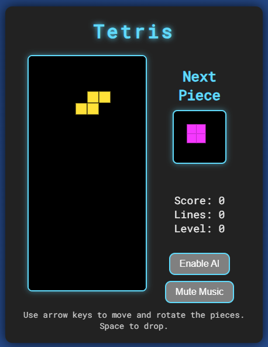

Game development · Reinforcement learning
Tetris / AI
A Tetris clone with an AI player based on Deep Q-Learning. The board becomes an environment for trying and evaluating decisions.

The idea
How can placing Tetris pieces be framed as a learning task?
The implementation
The board, actions, and reward form the basis of the AI player. A browser demo makes the experiment easy to explore.
Technologies
Deep Q-Learning
Game AI